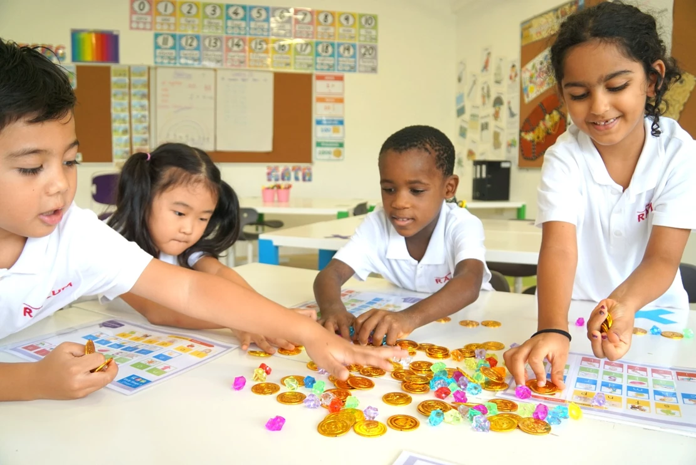
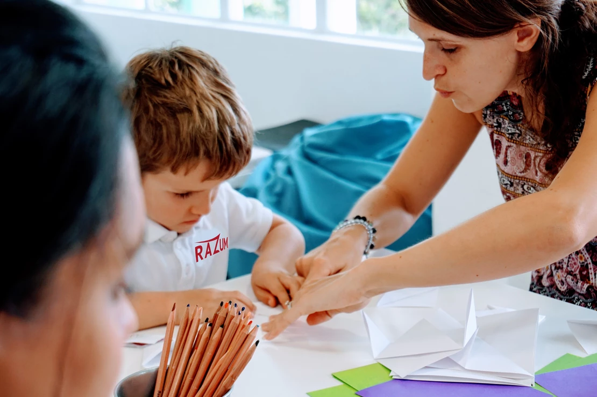

10 Things You Didn’t Know About International Schools in Singapore
Published on Dec 2, 2021
Finding a good school is already a dramatic, tedious task for any parent, but it is all the more challenging for expats. Yes, there are over 80 international schools in Singapore that cater to foreign students, but not all of them tick all the boxes.
From cost to curriculum, these are 10 of the most common problems faced by expat parents when searching for the right international school in Singapore.
1. Expat parents have little choice but to send their kids to international schools
Sending your kids to a local school could be a great way to help children feel like they’re a part of Singaporean culture. However, most expat parents plan to move back to their home country after a few years, so sending their kids to an international school where they can study in English (or Mandarin or Spanish) and receive a more “globally oriented” education is usually the ideal choice.
The restrictions and stringent process can make MOE schools simply inaccessible to expats. The Ministry of Education (MOE) recently increased school fees for non-ASEAN foreigners by about 3 percent, making government and government-aided schools just as costly as the most affordable international schools.
2. Large for-profit corporations run international schools
Increasingly, transnational corporations (TNCs) are operating international schools which means their main goal is to bring profit and equity growth to their shareholders. With profit as the priority, providing quality education can take a backseat. Your child will become another number on their system - not a name.
3. Large schools can lead to a lack of supervision and are inflexible
The average international school has over 2,000 students, with 8-12 classes per grade, with an inflexible curriculum. Maintaining the quality of education can be challenging for such a big organisation that is prone to oversight lapses. Anecdotes from parents of international school students include a teacher who apparently skipped math class for half a year and another who came drunk to work.
4. Average class size of 25 students means less personalised attention
Even if you got lucky with an international school that employs excellent teachers, another hurdle is the number of students per class. Studies have shown that 18:1 is the ideal student-teacher ratio to ensure optimal learning. Too many students in a class makes it difficult for even the best teachers to provide individual attention.
5. A one size fits all approach
International School programmes usually employ a comprehensive curriculum-- including lots of sport activities, music classes, etc.-- to provide holistic learning in theory. Unfortunately, what happens in reality is that the quality of those classes suffers. All 25 students can’t be equally interested in music.
Children from certain international schools have been heard complaining that, “We didn’t really have music class today as boys were not interested and the teacher spent all lesson calming them down.” The same thing happens with sport. As a result, parents whose children are really interested in sports are forced to send them to classes outside school, despite all the promises of the sports at a competitive level.
6. Different curriculum offerings can be confusing
Local schools often follow a standard curriculum while international schools may offer country-specific curriculum. Some schools offer US-style curricula, some offer curriculum that’s based on the British system, and some offer IB programs.
A country-specific curriculum makes sense for expats planning to repatriate and easily transferring their kids to a similar school system. However, understanding these systems and figuring out which one is best for your children can be a difficult process.
Furthermore, relocation to other countries for work opportunities means there is a need for an international school with a flexible curriculum and internationally recognised diploma for an easier transition. A flexible curriculum also makes it easy to schedule holiday trips to their home country.
7. Long school hours
The average international school operates for 8-9 hours a day. If a child attends any sport or music activity outside school, then they are forced to do it either early in the morning or late at night. Kids end up coming home exhausted after spending longer, busier days than their parents. More and more research shows that free play is beneficial to a child’s overall well-being. Having at least 2-3 hours of free play time a day all the way up to their teenage years can rescue your kids from potential burnout. Razum's academic teaching day is from 9 a.m. to 1 p.m., this means we are teaching the children at the peak of their day and it is not interrupted by specialist classes.
8. Confusing admission process
While local MOE (Ministry of Education) schools have transparent admission procedures, expat parents might find admission to international schools confusing and a bit overwhelming. Each international school in Singapore has a different procedure, unlike local schools.
To find out what the admission procedure is like for your chosen international school, you have to call the school and talk to the Admissions Officer. Singaporean citizens can’t enroll at international schools unless they have received special permission from the MOE.
Even when visiting the schools, some of the admissions people are not interested in speaking to parents or find them irritating and a nuisance. That coupled with dozens of acronyms and jargon, on top of unfamiliar curriculum and terms of business all make the task daunting. Additionally, enrollment and child age windows are inflexible.
9. Long waiting lists
Another hurdle is having to contend with long waiting lists because there are just too many expat parents trying to send their children to international schools. It’s common for parents to have first, second, and third choices just to have fallback schools in case they don’t get a slot from their preferred international school.
Unfortunately, if you don’t have the funds for several applications and refundable registration fees, you do not have the luxury of having a plan B, C, or D. If you fail to secure a slot, the application process may have closed for other schools and your child is at risk of skipping a term and falling behind.
10. Hefty fees
An average international school costs between S$25,000-$50,000 a year. Those school fees are not based on the cost of running a school, such as teachers' salaries or other operational costs. The only reason for this exorbitant price is the expat packages common in the olden days when companies used to allocate S$3,000 a month per child for education. Expat packages are becoming rarer and rarer these days, but international schools are yet to adjust.
You’ll also have to cough up some more money for extra-curricular activities, field trips, exams, and other activities. International schools are expensive, but are they worth the high cost including all the building fees, land fees, development fees, overseas travel fees, etc. These fees can run to an extra S$10,000 per year on top of the school!
A few more affordable options have appeared in recent years, but those schools have not made a large impact on the market. As a result, expats with 2 or more kids are forced to leave Singapore because they simply cannot afford to send a 2nd or 3rd child to international schools.
Unfortunately, this problem persists more than half a century after the UN passed Article 26 of the 1948 Universal Declaration of Human Rights which states: “Everyone has the right to education.”
Razum’s Vision for International Schools
Razum is a school that is transforming the face of Singapore’s international schools. We’re different from other schools because we implement a four-hour school day which teaches children at the peak of their day (from 8:45 a.m. to 1 p.m.).
We instill in the student that academic learning is worth striving for. We also emphasise the importance of art, music, dance, and drama to ensure that our students excel in all subjects. After 1 PM, our students are free to decide if they want to participate in extracurricular activities or language classes. These ECAs are priced in a reasonable way and are purely optional. Our parents are involved in the creation of some ECAs - for example we have created an ECA on nutrition and healthy cooking after a parent asked us to come up with a bespoke class.
The annual tuition fee starts from $14,900, making Razum a lot more affordable than most other international schools. The school is located right in the center of Singapore with classrooms designed for the sole purpose of making education more fun and enjoyable for students.
While most international schools are expensive, have long hours, and confusing curriculum systems, Razum is changing all of that. International schools in Singapore still have a long way to go, but Razum makes it easier for expat parents to expose their children to a holistic approach to education to instill a life-long love for learning.
Find out more about Razum International School BOOK A PRIVATE TOUR
Latest Articles
Contact Infor
Detech Tower 8 Tôn Thất Thuyết, Nam từ liêm, Hà Nội
+841 2345 9999Write to us
SchoolsInfor.com
Newsletter
Sign up for our newsletter to get the latest news and updates on schools.